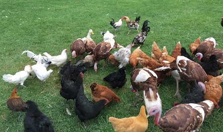
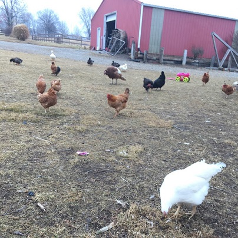
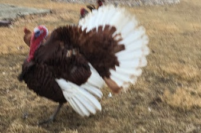
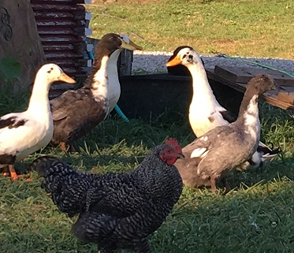

Chickens and turkeys and ducks... oh my.
We raise our free range chicken, turkeys and ducks for four primary purposes. They provide eggs, free range on insects including ticks and mosquitoes, provide a very good fertiler to add back into our soil and are a source of meat for our table.

Chickens
We focus on creating the most natural environment for our chickens. They free range during the day and locked up at night. We also believe in variety in our birds. Perhaps the most exciting addition to our flock is some easter eggers.
Interesting Chicken Facts
- chickens are a domestic subspecies of the pheasant
- chickens have very poor flying skills
- originally domesticated for cockfights
- not only do they eat insect and seeds but alos small mice and lizards
- their are more than 25 billion chickens in the world more then any other bird

Turkeys
Our breeding pair will be used to build our own flock. They are also used for meat especially around Thanksgiving.Intresting Turkey Facts
- there are over 7 million wild turkeys today
- adult males weight 16 to 20 pounds while females weigh 8 to 12 pounds
- turkeys can run at speeds of up to 25 miles per hour

Ducks
We have several types of ducks. They are a great source of fertilzer, produce eggs and are a source of meat for our table.Intresting Duck Facts
- ducks are related to swans and geese
- all domestic ducks descended from either a Mallard or Muscoy Duck
- their webbed feet have no nerves or blood vessels allowing them to handle the cold with ease
- duck eggs are richer and thus better for baking with
- duck eggs have more Omega-3 fatty acids